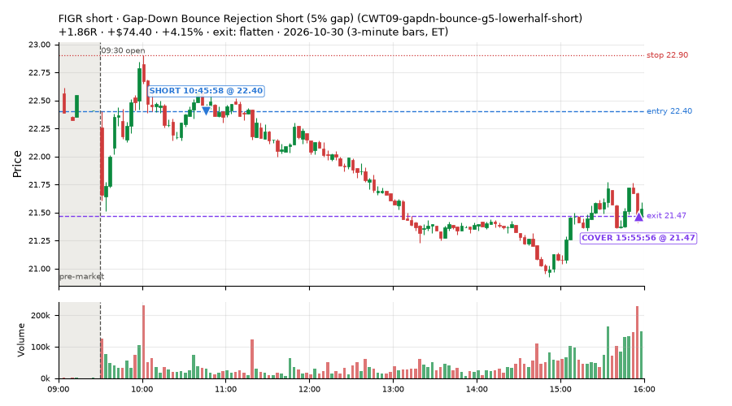
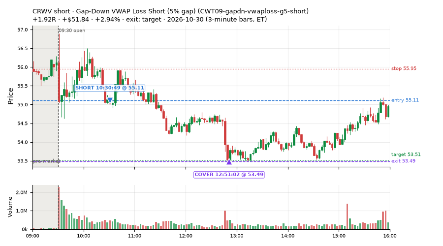
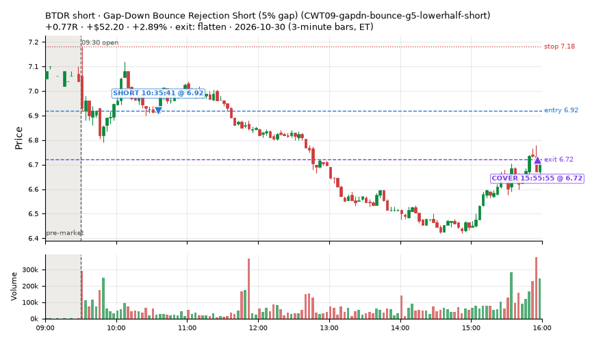
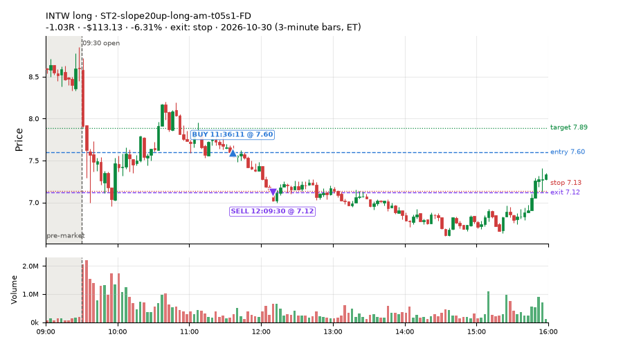
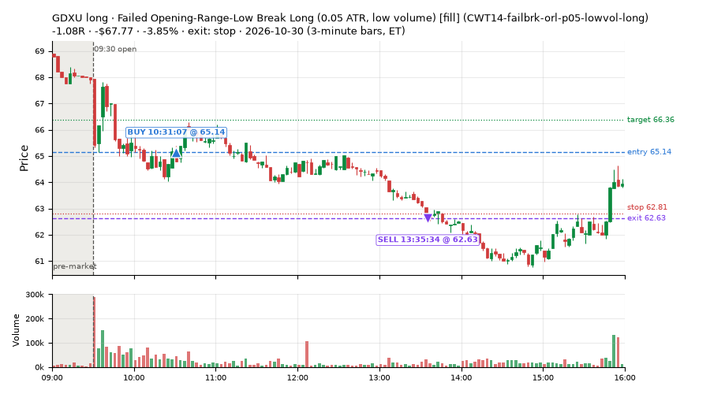
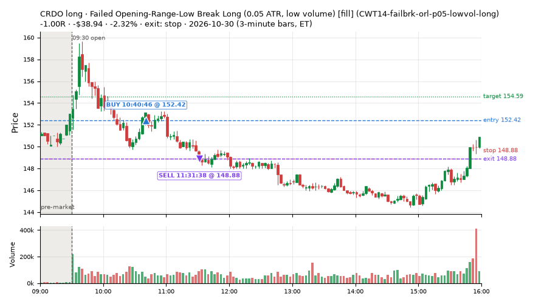
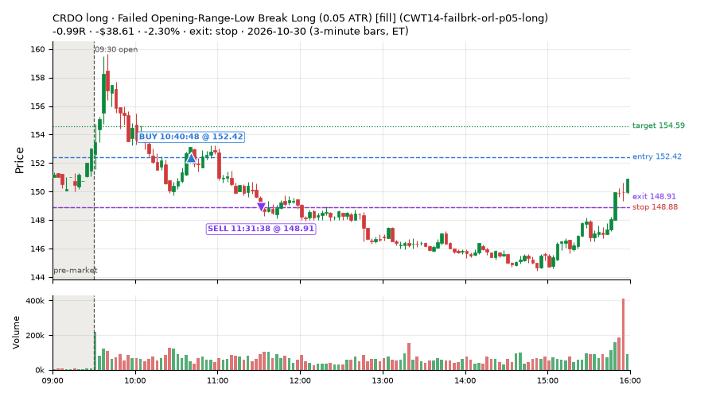
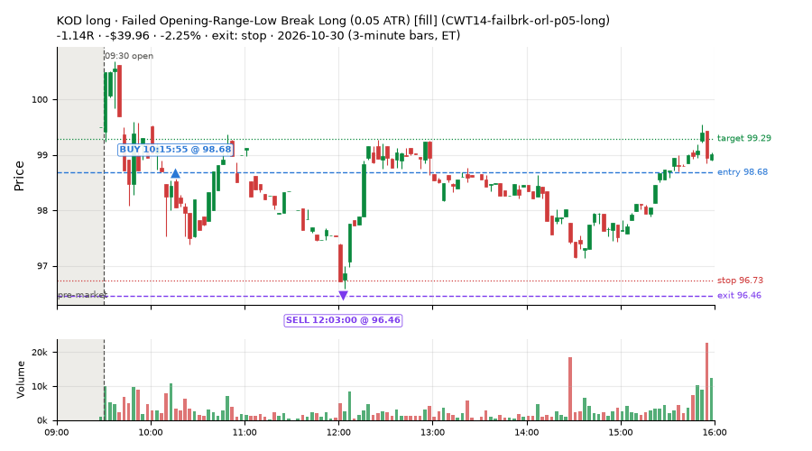

361 trades · win rate 56% · P/L $-543.96
PROBATION: no live setup has passed both locked test periods. 10 owner-directed setups added 2026-10-08 (MarcoFlow top 5 + 5 new), untested live. RW6G1 (RW6 + VWAP band guard) added 2026-10-09, probation.

| Symbol | Setup | Side | In | Out | Entry | Exit | Exit reason | % gained | P/L |
|---|---|---|---|---|---|---|---|---|---|
| FIGR | Gap-Down Bounce Rejection Short (5% gap) (CWT09-gapdn-bounce-g5-lowerhalf-short) | short | 10:45 | 15:55 | 22.40 | 21.47 | flatten | +4.15% | $74.40 |
| CRWV | Gap-Down VWAP Loss Short (5% gap) (CWT09-gapdn-vwaploss-g5-short) | short | 10:30 | 12:51 | 55.11 | 53.49 | target | +2.94% | $51.84 |
| BTDR | Gap-Down Bounce Rejection Short (5% gap) (CWT09-gapdn-bounce-g5-lowerhalf-short) | short | 10:35 | 15:55 | 6.92 | 6.72 | flatten | +2.89% | $52.20 |
| Symbol | Setup | Side | In | Out | Entry | Exit | Exit reason | % lost | P/L |
|---|---|---|---|---|---|---|---|---|---|
| INTW | ST2-slope20up-long-am-t05s1-FD | long | 11:36 | 12:09 | 7.60 | 7.12 | stop | -6.31% | $-113.13 |
| GDXU | CWT14-failbrk-orl-p05-lowvol-long | long | 10:31 | 13:35 | 65.14 | 62.63 | stop | -3.85% | $-67.77 |
| CRDO | CWT14-failbrk-orl-p05-lowvol-long | long | 10:40 | 11:31 | 152.42 | 148.88 | stop | -2.32% | $-38.94 |
| CRDO | CWT14-failbrk-orl-p05-long | long | 10:40 | 11:31 | 152.42 | 148.91 | stop | -2.30% | $-38.61 |
| KOD | CWT14-failbrk-orl-p05-long | long | 10:15 | 12:03 | 98.68 | 96.46 | stop | -2.25% | $-39.96 |








Signal to fill: median 1s, 90th percentile 3s (361 trades). Bars close each minute; the order follows the bar close.
Best excursion (MFE): median 0.43R; worst (MAE) median 0.65R. 28% of trades never got +0.25R in our favour; 6 reached +1R and still closed at or below 0.
| Symbol | Setup | Best R | Worst R | Closed R |
|---|---|---|---|---|
| SBSW | CWT09-gapdn-bounce-g5-lowerhalf-short | +5.11 | -0.78 | +1.33 |
| BITX | CWT09-gapdn-vwaploss-g5-short | +1.79 | -1.41 | -1.28 |
| AMPX | CWT09-gapdn-bounce-g5-lowerhalf-short | +4.09 | -0.18 | +1.18 |
| DC | CWT09-gapdn-bounce-g5-lowerhalf-short | +4.18 | -0.31 | +1.27 |
| LRCX | CWT09-gapdn-bounce-g5-lowerhalf-short | +3.71 | -0.51 | +1.14 |
| Entry time | Trades | Win | Avg R | P/L |
|---|---|---|---|---|
| 09:50-10:30 | 171 | 57% | -0.21 | $-359.12 |
| 10:30-11:30 | 138 | 49% | -0.10 | $-248.36 |
| 11:30-13:00 | 20 | 60% | +0.12 | $-68.69 |
| 13:00-14:00 | 9 | 78% | +0.36 | $17.49 |
| 14:00-16:00 | 23 | 70% | +0.11 | $114.72 |
| Setup | Trades | Win | Avg R | Adj R (net of SPY) | P/L |
|---|---|---|---|---|---|
| Gap-Down Bounce Rejection Short (5% gap) (CWT09-gapdn-bounce-g5-lowerhalf-short) | 26.0 | 65% | +0.35 | +0.10 | $285.78 |
| Gap-Down VWAP Loss Short (5% gap) (CWT09-gapdn-vwaploss-g5-short) | 25.0 | 24% | -0.33 | -0.21 | $-128.10 |
| Coil Under the High (4 bars) (CWT12-coil-k4-long) | 22.0 | 64% | -0.12 | +0.03 | $4.82 |
| Coil Under the High (6 bars) (CWT12-coil-k6-long) | 7.0 | 43% | +0.32 | +0.57 | $-10.31 |
| Stretched Above VWAP Fade (CWT13-vwapstretch-z05-short) | 9.0 | 56% | +0.00 | -0.31 | $49.58 |
| Failed Opening-Range-Low Break Long (0.05 ATR) [fill] (CWT14-failbrk-orl-p05-long) | 44.0 | 43% | -0.44 | -0.39 | $-286.58 |
| Failed Opening-Range-Low Break Long (0.05 ATR, low volume) [fill] (CWT14-failbrk-orl-p05-lowvol-long) | 45.0 | 44% | -0.41 | -0.33 | $-346.68 |
| Failed Opening-Range-Low Break Long (0.1 ATR) [fill] (CWT14-failbrk-orl-p10-long) | 29.0 | 62% | -0.17 | -0.26 | $-67.35 |
| Failed Opening-Range-Low Break Long (low volume) (CWT14-failbrk-orl-p10-lowvol-long) | 18.0 | 56% | -0.25 | -0.32 | $-64.03 |
| Failed Prior-Day-High Break Short (0.05 ATR, low volume) [fill] (CWT14-failbrk-pdh-p05-lowvol-short) | 25.0 | 76% | +0.05 | -0.24 | $36.70 |
| Failed Prior-Day-High Break Short (low volume) (CWT14-failbrk-pdh-p10-lowvol-short) | 9.0 | 78% | +0.14 | -0.24 | $21.66 |
| Failed Prior-Day-High Break Short (0.1 ATR) [fill] (CWT14-failbrk-pdh-p10-short) | 12.0 | 83% | +0.23 | -0.02 | $41.53 |
| Failed Prior-Day-Low Break Long (shallow) (CWT14-failbrk-pdl-p05-long) | 10.0 | 50% | -0.33 | -0.22 | $-3.40 |
| Failed Prior-Day-Low Break Long (0.05 ATR, low volume) [fill] (CWT14-failbrk-pdl-p05-lowvol-long) | 17.0 | 53% | -0.27 | -0.19 | $-55.92 |
| Opening-Range Low Sweep Reversal (LIQ-orl-sweep-open15-s25-long) | 8.0 | 25% | -0.21 | +0.13 | $-40.96 |
| MF1-945-flowsell-vwapup-FD | 2.0 | 50% | +0.29 | -0.91 | $-19.57 |
| NS2-sma50break-overbought-short-FD | 1.0 | 100% | +0.93 | +0.54 | $13.08 |
| RW2-exhaustion-noon-adv150-short-FD | 3.0 | 33% | -0.39 | -0.63 | $-15.22 |
| RW6-ns2-up3-short-FD | 1.0 | 100% | +0.78 | +0.58 | $24.15 |
| ST2-slope20up-long-am-t05s1-FD | 15.0 | 93% | +0.36 | +0.32 | $43.71 |
| Midday Gap-Up Dip Buy (heat_fade_long) failed Apr-Jun holdout: -0.138R/trade over 1043 trades | 5.0 | 60% | +0.09 | +0.42 | $-7.94 |
| heat_fade_long-FD | 10.0 | 60% | +0.01 | -0.19 | $-4.35 |
| Morning Bounce Fade (heat_fade_short) failed Apr-Jun holdout: -0.015R/trade over 1420 trades | 5.0 | 80% | +0.52 | +0.44 | $5.39 |
| heat_fade_short-FD | 13.0 | 46% | +0.00 | -0.41 | $-19.95 |
Market direction (SPY, beta 1) accounted for $79.22 of today's $-543.96; the rest ($-623.18) came from the setups themselves. Avg R net of SPY: -0.17 (incl. a hedge leg's cost; report only).
26 setups live today. Today: 1273 signals, 361 taken, 57 lost because another setup held the symbol (4%). Since 2026-10-21 (8 sessions): 6161 signals, 2547 taken, 312 lost to other setups (5%). Peak open positions today 155 of 200 slots. Earnings blackout removed 1872 symbols before scanning.
Simulated playing time (not live): 3598 what-if trades of signals not taken, avg -0.08R, 56% winners; of them 312 lost to another setup (avg -0.08R).
Crowded out: NS2-sma50break-overbought-short, heat_fade_long-FD · Starved: ST1-ordn-long-pm-t05s1-FD, MF1-945-flowsell-vwapup-FD, heat_fade_long, heat_fade_short, heat_fade_short-FD
| Prio | Setup | Today sig / taken | Sessions | Signals / taken / trades | Taken/day | Expected/day | Lost to other setups | Lost to (setup n) | Top skip reasons | SIMULATED: not-taken n / avg R / win | Verdict |
|---|---|---|---|---|---|---|---|---|---|---|---|
| 1 | ST1-ordn-long-pm-t05s1-FD ST1-ordn-long-pm-t05s1-FD | 0 / 0 | 8 | 10 / 6 / 6 | 0.75 | 3.49 | 0 | – | spread / quote / size 3, broker rejected 1 | 4 / +0.03R / 50% | starved 0.75 entries/day vs ~3.49 expected |
| 2 | RW6-ns2-up3-short-FD RW6-ns2-up3-short-FD | 10 / 1 | 8 | 55 / 23 / 23 | 2.88 | 7.12 | 2 | CWT09-gapdn-bounce-g5-lowerhalf-short 1, RW6-ns2-up3-short-FD 1, NS2-sma50break-overbought-short-FD 1 | not shortable / shorts off 17, daily loss cap 9, spread / quote / size 4 | 32 / +0.54R / 84% | slow 14.4 entries/week; ~4 weeks to 60 trades |
| 3 | NS2-sma50break-overbought-short-FD NS2-sma50break-overbought-short-FD | 8 / 1 | 8 | 94 / 48 / 48 | 6.00 | 17.08 | 3 | CWT12-coil-k4-long 3 | daily loss cap 19, not shortable / shorts off 14, spread / quote / size 10 | 46 / +0.39R / 70% | ok 30.0 entries/week |
| 4 | Big Gainer Average Reclaim Fade NS2-sma50break-overbought-short | 5 / 0 | 8 | 45 / 6 / 6 | 0.75 | 5.74 | 25 | NS2-sma50break-overbought-short-FD 24, RW6-ns2-up3-short-FD 7, CWT12-coil-k4-long 1 | symbol held by another setup 25, not shortable / shorts off 8, spread / quote / size 6 | 39 / +0.22R / 64% | crowded-out 25 of 45 signals (56%) lost to setups already holding the symbol |
| 5 | MF1-945-flowsell-vwapup-FD MF1-945-flowsell-vwapup-FD | 3 / 2 | 8 | 84 / 35 / 35 | 4.38 | 23.94 | 2 | CWT12-coil-k6-long 1, CWT14-failbrk-orl-p05-long 1 | spread / quote / size 26, daily loss cap 14, not shortable / shorts off 7 | 49 / -0.12R / 33% | starved 4.38 entries/day vs ~23.94 expected |
| 6 | ST2-slope20up-long-am-t05s1-FD ST2-slope20up-long-am-t05s1-FD | 21 / 15 | 8 | 97 / 75 / 75 | 9.38 | 24.03 | 11 | heat_fade_short-FD 9, heat_fade_short 1, CWT09-gapdn-bounce-g5-lowerhalf-short 1 | symbol held by another setup 11, spread / quote / size 11 | 22 / +0.02R / 64% | ok 46.9 entries/week |
| 7 | Midday Gap-Up Dip Buy heat_fade_long | 7 / 5 | 8 | 35 / 24 / 24 | 3.00 | 30.36 | 8 | heat_fade_long-FD 7, heat_fade_short-FD 1 | symbol held by another setup 8, spread / quote / size 3 | 11 / +0.44R / 73% | starved 3.00 entries/day vs ~30.36 expected |
| 8 | Opening-Range Low Sweep Reversal LIQ-orl-sweep-open15-s25-long | 12 / 8 | 8 | 130 / 94 / 94 | 11.75 | – | 9 | CWT14-failbrk-orl-p10-long 8, CWT14-failbrk-orl-p05-lowvol-long 8, CWT14-failbrk-orl-p10-lowvol-long 7 | spread / quote / size 15, symbol held by another setup 9, per-setup cap 6 | 36 / -0.07R / 53% | ok 58.8 entries/week |
| 9 | RW2-exhaustion-noon-adv150-short-FD RW2-exhaustion-noon-adv150-short-FD | 12 / 3 | 8 | 317 / 132 / 132 | 16.50 | 50.34 | 3 | CWT14-failbrk-orl-p10-lowvol-long 1, CWT14-failbrk-orl-p10-long 1, CWT12-coil-k6-long 1 | daily loss cap 106, not shortable / shorts off 47, spread / quote / size 27 | 185 / -0.13R / 45% | ok 82.5 entries/week |
| 10 | heat_fade_long-FD heat_fade_long-FD | 15 / 10 | 8 | 75 / 37 / 37 | 4.62 | 51.74 | 20 | heat_fade_long 19, ST1-ordn-long-pm-t05s1-FD 1, heat_fade_short-FD 1 | symbol held by another setup 20, spread / quote / size 12, daily loss cap 6 | 38 / +0.34R / 71% | crowded-out 20 of 75 signals (27%) lost to setups already holding the symbol |
| 11 | Failed Opening-Range-Low Break Long (low volume) CWT14-failbrk-orl-p10-lowvol-long | 60 / 18 | 8 | 337 / 195 / 195 | 24.38 | – | 4 | CWT14-failbrk-pdh-p05-lowvol-short 3, CWT14-failbrk-pdh-p10-short 2, CWT14-failbrk-pdh-p10-lowvol-short 2 | daily loss cap 70, spread / quote / size 49, per-setup cap 17 | 140 / -0.04R / 66% | ok 121.9 entries/week |
| 12 | Failed Opening-Range-Low Break Long (0.1 ATR) [fill] CWT14-failbrk-orl-p10-long | 91 / 29 | 8 | 425 / 224 / 224 | 28.00 | – | 8 | CWT14-failbrk-orl-p05-lowvol-long 5, CWT14-failbrk-orl-p05-long 5, CWT14-failbrk-orl-p10-lowvol-long 5 | daily loss cap 99, spread / quote / size 59, per-setup cap 32 | 199 / -0.13R / 61% | ok 140.0 entries/week |
| 13 | Morning Bounce Fade heat_fade_short | 17 / 5 | 8 | 121 / 60 / 60 | 7.50 | 31.76 | 0 | – | spread / quote / size 47, daily loss cap 8, not shortable / shorts off 6 | 61 / -0.16R / 39% | starved 7.50 entries/day vs ~31.76 expected |
| 14 | Failed Opening-Range-Low Break Long (0.05 ATR, low volume) [fill] CWT14-failbrk-orl-p05-lowvol-long | 140 / 45 | 8 | 791 / 337 / 337 | 42.12 | – | 9 | CWT14-failbrk-pdh-p10-short 3, CWT14-failbrk-pdh-p05-lowvol-short 3, CWT14-failbrk-orl-p10-lowvol-long 2 | daily loss cap 221, per-setup cap 137, spread / quote / size 84 | 451 / -0.08R / 65% | ok 210.6 entries/week |
| 15 | heat_fade_short-FD heat_fade_short-FD | 36 / 13 | 8 | 464 / 189 / 189 | 23.62 | 173.78 | 92 | heat_fade_short 61, LIQ-orl-sweep-open15-s25-long 11, CWT14-failbrk-orl-p05-long 8 | symbol held by another setup 92, daily loss cap 71, spread / quote / size 71 | 275 / -0.01R / 48% | starved 23.62 entries/day vs ~173.78 expected |
| 16 | Failed Opening-Range-Low Break Long (0.05 ATR) [fill] CWT14-failbrk-orl-p05-long | 196 / 44 | 8 | 1108 / 412 / 412 | 51.50 | – | 85 | CWT14-failbrk-orl-p10-lowvol-long 66, CWT14-failbrk-orl-p10-long 66, CWT14-failbrk-orl-p05-lowvol-long 66 | daily loss cap 280, per-setup cap 199, spread / quote / size 129 | 694 / -0.08R / 64% | ok 257.5 entries/week |
| 17 | Gap-Down Bounce Rejection Short (5% gap) CWT09-gapdn-bounce-g5-lowerhalf-short | 164 / 26 | 8 | 331 / 67 / 67 | 8.38 | – | 3 | CWT12-coil-k4-long 3, CWT12-coil-k6-long 1 | not shortable / shorts off 184, per-setup cap 32, spread / quote / size 24 | 263 / +0.18R / 56% | ok 41.9 entries/week |
| 18 | Failed Prior-Day-High Break Short (0.05 ATR, low volume) [fill] CWT14-failbrk-pdh-p05-lowvol-short | 49 / 25 | 7 | 383 / 133 / 133 | 19.00 | – | 5 | CWT14-failbrk-orl-p10-long 4, CWT14-failbrk-orl-p05-long 3, CWT14-failbrk-orl-p10-lowvol-long 2 | daily loss cap 150, spread / quote / size 70, not shortable / shorts off 23 | 250 / -0.09R / 61% | ok 95.0 entries/week |
| 19 | Failed Prior-Day-High Break Short (low volume) CWT14-failbrk-pdh-p10-lowvol-short | 25 / 9 | 7 | 157 / 81 / 81 | 11.57 | – | 2 | CWT14-failbrk-orl-p10-long 2, CWT14-failbrk-orl-p05-long 2 | spread / quote / size 44, daily loss cap 20, not shortable / shorts off 10 | 76 / +0.00R / 70% | ok 57.9 entries/week |
| 20 | Failed Prior-Day-High Break Short (0.1 ATR) [fill] CWT14-failbrk-pdh-p10-short | 42 / 12 | 6 | 261 / 124 / 124 | 20.67 | – | 6 | CWT14-failbrk-pdh-p05-lowvol-short 3, CWT14-failbrk-pdh-p10-lowvol-short 3, CWT14-failbrk-orl-p10-long 3 | spread / quote / size 60, daily loss cap 32, not shortable / shorts off 20 | 137 / -0.07R / 63% | ok 103.3 entries/week |
| 21 | Stretched Above VWAP Fade CWT13-vwapstretch-z05-short | 16 / 9 | 6 | 83 / 55 / 55 | 9.17 | – | 1 | LIQ-orl-sweep-open15-s25-long 1 | not shortable / shorts off 11, spread / quote / size 11, daily loss cap 5 | 28 / -0.17R / 43% | ok 45.8 entries/week |
| 22 | Gap-Down VWAP Loss Short (5% gap) CWT09-gapdn-vwaploss-g5-short | 229 / 25 | 5 | 328 / 36 / 36 | 7.20 | – | 1 | CWT14-failbrk-orl-p05-lowvol-long 1 | not shortable / shorts off 193, per-setup cap 54, spread / quote / size 25 | 286 / -0.30R / 33% | ok 36.0 entries/week |
| 23 | Coil Under the High (6 bars) CWT12-coil-k6-long | 9 / 7 | 4 | 150 / 53 / 53 | 13.25 | – | 8 | heat_fade_short 4, CWT14-failbrk-pdh-p10-short 3, CWT14-failbrk-pdh-p05-lowvol-short 2 | daily loss cap 53, spread / quote / size 34, symbol held by another setup 8 | 97 / -0.27R / 32% | ok 66.2 entries/week |
| 24 | Coil Under the High (4 bars) CWT12-coil-k4-long | 30 / 22 | 2 | 204 / 74 / 74 | 37.00 | – | 4 | RW2-exhaustion-noon-adv150-short-FD 1, CWT14-failbrk-pdh-p05-lowvol-short 1, heat_fade_short 1 | per-setup cap 108, spread / quote / size 18, symbol held by another setup 4 | 130 / -0.35R / 48% | ok 185.0 entries/week |
| 25 | Failed Prior-Day-Low Break Long (shallow) CWT14-failbrk-pdl-p05-long | 46 / 10 | 1 | 46 / 10 / 10 | 10.00 | – | 0 | – | daily loss cap 31, spread / quote / size 5 | 36 / -0.43R / 42% | ok 50.0 entries/week |
| 26 | Failed Prior-Day-Low Break Long (0.05 ATR, low volume) [fill] CWT14-failbrk-pdl-p05-lowvol-long | 30 / 17 | 1 | 30 / 17 / 17 | 17.00 | – | 1 | CWT14-failbrk-orl-p10-lowvol-long 1, CWT14-failbrk-orl-p10-long 1, CWT14-failbrk-orl-p05-lowvol-long 1 | daily loss cap 6, spread / quote / size 6, symbol held by another setup 1 | 13 / -0.34R / 46% | ok 85.0 entries/week |
Every trade is attached as a CSV you can open and edit in Excel or Google Sheets. Live page: https://misiti15.github.io/MCF/live/